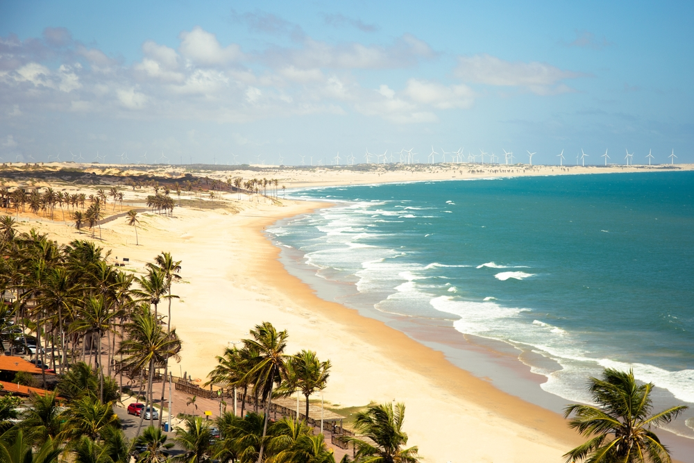
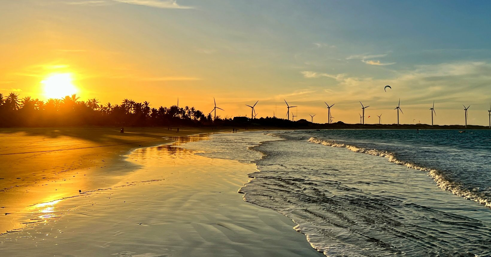

Fortaleza é um município brasileiro, capital e a cidade mais populosa do estado do Ceará, situado na região Nordeste do Brasil. Distante 2 285 km de Brasília, capital federal do país, a cidade desenvolveu-se às margens do riacho Pajeú, e sua toponímia é uma alusão ao Forte Schoonenborch, o qual deu origem ao município, construído pelos holandeses durante sua segunda permanência no local, entre 1649 e 1654.

Flecheiras
Flecheiras é um destino tranquilo pé na areia. Um vilarejo cearense rústico com praias lindas, dunas, piscinas naturais e pousadas charmosas.

Icaraizinho de Amontada
Icaraizinho de Amontada é um vilarejo cearense capaz de desbancar Fortaleza e Jericoacoara em questão de sossego e — alerta de polêmica! — belezas naturais. Tem um quê de destino secreto, quase desconhecido. E quem conhece, não quer nem que a gente te conte. Então fica só entre nós, tá?!